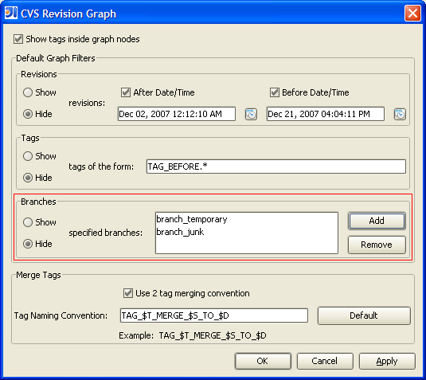

Branch Filter
Each revision of a source file is placed within a branch. A branch is a parallel line
of development and is used to separate different development tasks that operate on the same
file at the same time. By default, if no branch is specified, the HEAD or MAIN branch
is used. Entire branches can be filtered based on branch name. Multiple branches
can clutter a revision graph and reduce the performance of rendering the graph. Older
branches, for example, may not be important anymore and could be filtered out. The
filter can be either to include or exclude the branches that match the filter based on the
show/hide toggle.
